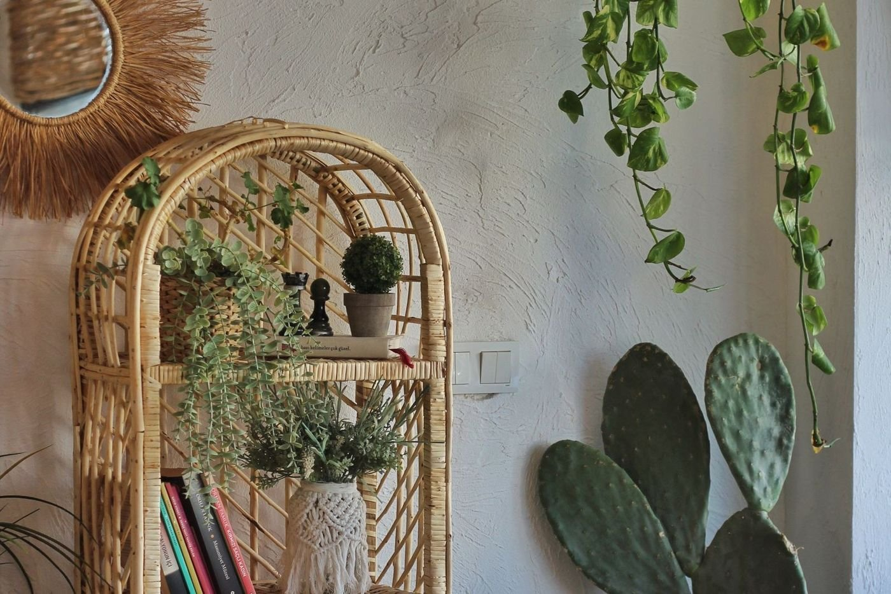

It's almost never the tray itself doing the work. A woven tray can sit on a kitchen counter, a coffee table or a bathroom vanity and look completely at home in all three, but swap out what's piled on top of it and the whole feel of the spot shifts. Load it with candles and it reads moody. Stack it with books and a small dish on top and it reads intentional. Fill it with bottles and glasses and it suddenly reads like a bar.
So instead of sorting this by room, it makes more sense to sort it by job: what does the tray actually need to hold, and what does that job call for? Here's a rundown of the best woven tray setups, starting with the mistakes worth dodging and working down to the most everyday use of all, catching the odds and ends that would otherwise take over a surface.


Common Mistakes Worth Avoiding
Before getting into what belongs on a tray, it's worth flagging what tends to go wrong. A tray that never actually gets used, styled once and then left purely for show, usually just turns into a dust magnet instead of a functional piece.
Size matters more than people expect, too. A tray that's too small for its surface basically disappears, while one that's too big swallows a narrow console or side table whole. Random objects thrown together without any shared color or material tend to look like an afterthought rather than a styled moment, even when each individual piece is nice on its own.
And the single most common misstep: overfilling it. The second items start overlapping each other or spilling past the tray's edge, it stops reading as organized and starts reading as clutter that's merely been contained.
For a Seasonal Rotation
One of the more underrated uses for a tray is as a seasonal swap station. Rather than redoing an entire console or coffee table every few months, the tray itself stays put and only its contents change. Fall gourds and pinecones can hand off to winter greenery, which eventually gives way to spring bulbs or a jar of fresh-cut flowers.
That consistency is the real time-saver, since the tray stays exactly where it is, so refreshing a room for the season takes minutes instead of an afternoon. Because this approach isn't tied to one specific spot, it works on basically any surface already mentioned here, a mantel, a console, a dining table or a coffee table.
For a Coffee or Tea Station
Near a coffee maker, a tray does double duty. It corrals syrups, a sugar bowl and spoons into one grab-and-go unit, and it turns the inevitable rushed-morning spill into a thirty-second cleanup instead of a whole-counter wipe-down.
The same logic carries over to a tea station, or even a small home bar setup on a kitchen counter. The one rule worth sticking to is keeping what's on the tray limited to the stuff actually used daily. The moment it starts absorbing general counter overflow, it stops functioning as a station and starts functioning as clutter with better branding.
For Bathroom and Vanity Essentials
A bathroom counter covered in loose lotion bottles and skincare tends to look messy fast, even when everything on it is genuinely in regular use. Grouping those same items onto a tray instantly reads as organized instead, and it has a practical upside too, since lifting the whole tray off makes wiping down the counter underneath a quick job rather than a full rearrangement.
Material matters here more than in most other rooms. A large, loosely woven tray can trap moisture in a humid bathroom, so something smaller and more water-resistant holds up better. The exact same approach, tray in, loose bottles corralled, works just as well on a bedroom dresser or vanity table.
For Books and Reading Material
An ottoman that doubles as a coffee table tends to collect loose books and magazines fast, and a tray is what turns that pile into something that actually looks intentional. Two to four books is usually the sweet spot; stack much more than that and it starts to look like something about to topple rather than something styled.
Topping that stack with one small object, a candle or a little dish, finishes it without much real effort. The same trick works well in a window seat or reading nook too, which is often where books accumulate the most unstyled clutter of all.
For Plants and Greenery
Potted plants and trays are a natural pairing, mostly for a practical reason: the tray catches the water and soil mess that would otherwise land directly on the surface underneath. Grouping two or three small pots onto one tray also just looks better, reading as a deliberate little garden instead of plants scattered randomly across a shelf.
This setup holds up on a kitchen windowsill, a console table or even an outdoor patio surface. One detail worth paying attention to is that a tray with even a slight lip or raised edge manages water spills far better than one that's completely flat.
For Candles and Ambient Objects
Candles practically call for a tray. Grouping two or three together keeps any wax drips contained to one spot instead of marking up the furniture, and the cluster itself reads as far more deliberate than candles scattered individually across a room.
Varying the heights rather than lining up identical candles adds some real visual interest to the grouping. This setup works equally well on a coffee table, a mantel, the edge of a bathtub or a nightstand, and tucking in a single matchbox or a small lighter alongside the candles keeps everything needed for lighting them in exactly one place.
For a Drink or Bar Setup
A tray turns a loose collection of bottles, glasses and a small ice bucket into one cohesive, movable unit, which works just as well on a bar cart as it does on a sideboard or a kitchen counter doing double duty as a casual bar. The real advantage over leaving bottles scattered is portability, since the whole setup can get picked up and carried to a party, or to an entirely different room, in one trip.
A cloth napkin folded underneath the bottles adds a little extra polish for almost no effort at all.
For Corralling Everyday Clutter
And then there's the most purely functional use of all: just containing the small stuff that would otherwise spread across an entire surface. Keys, mail, loose change and a wallet belong gathered in one spot by the door, rather than scattered across an entryway console piece by piece.
The same principle plays out on a coffee table with remote controls and coasters. What makes this work is almost entirely the tray's edge, since everything inside that boundary reads as intentional, and everything that strays outside it reads as clutter, no matter how tidy the room otherwise looks.
Final Thoughts
Across every one of these setups, the tray itself is almost never the interesting part. What's actually grouped inside it, and whether that grouping matches what the surface underneath genuinely needs, is what makes the whole thing work or fall flat.
So rather than starting with a room and trying to figure out what tray fits it, it's worth flipping the question around: what job actually needs doing? Clutter control, a drink setup, candles, books, vanity essentials, a coffee station, plants, a seasonal swap. Once that's settled, the right room and the right tray style tend to fall into place on their own.